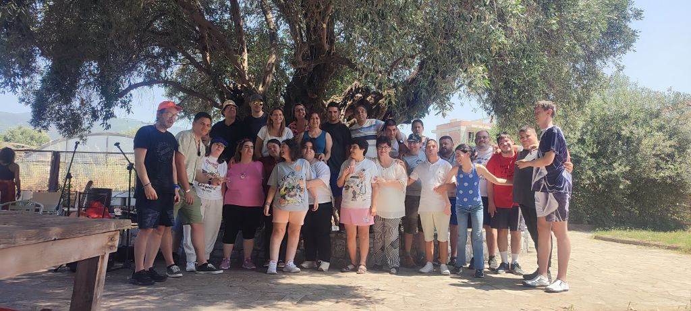

Η Ιστορία του Κήπου της Λυσούς

Ο Κήπος της Λυσούς ξεκίνησε το φθινόπωρο του 2016 στην Καλαμάτα ως ένα εργαστήριο κηπουρικής για νέους ενήλικες με αναπηρίες. Η πρωτοβουλία γεννήθηκε από το όραμα δύο Γερμανίδων που ζουν μόνιμα στη Μάνη, της Waltraud Sperlich και της Eva Lang, οι οποίες αποφάσισαν να αφιερώσουν ένα αρχικό κεφάλαιο 50.000 ευρώ στη δημιουργία ενός χώρου που θα προσέφερε ουσιαστικές ευκαιρίες συμμετοχής και ανάπτυξης σε μία από τις πιο ευάλωτες κοινωνικές ομάδες.
Πιστεύοντας βαθιά στη θεραπευτική δύναμη της επαφής με τη φύση και αξιοποιώντας τις ιδιαίτερα ευνοϊκές κλιματικές συνθήκες της Ελλάδας, δημιούργησαν ένα εργαστήριο οργανικής κηπουρικής για νέες και νέους που είχαν ολοκληρώσει τη σχολική τους εκπαίδευση. Η ανάγκη ήταν εμφανής. Για πολλούς ενήλικες με αναπηρία στην Ελλάδα οι δυνατότητες εκπαίδευσης, επαγγελματικής κατάρτισης και κοινωνικής συμμετοχής παραμένουν εξαιρετικά περιορισμένες μετά το τέλος της σχολικής ζωής.
Ο Κήπος της Λυσούς ξεκίνησε με δώδεκα συμμετέχοντες και από την πρώτη κιόλας ημέρα γνώρισε μεγάλη ανταπόκριση. Η ζήτηση αυξανόταν συνεχώς, δημιουργώντας μια διαρκώς διευρυνόμενη λίστα αναμονής. Παράλληλα με την κηπουρική, αναπτύχθηκαν νέα εκπαιδευτικά και δημιουργικά εργαστήρια, όπως η κεραμική και η μουσική, διευρύνοντας τις δυνατότητες έκφρασης, μάθησης και προσωπικής ανάπτυξης των ωφελουμένων. Σταδιακά, η φιλοσοφία του οργανισμού εξελίχθηκε σε μια ολιστική προσέγγιση που δίνει ίση σημασία στη σωματική, ψυχική και κοινωνική ευημερία κάθε ανθρώπου.
Καθ' όλη τη διάρκεια της λειτουργίας του, ο Κήπος της Λυσούς στηρίχθηκε σχεδόν αποκλειστικά σε ιδιωτικές δωρεές και χορηγίες, κυρίως από τη Γερμανία και το Ίδρυμα NIC του Λιχτενστάιν. Ως αστική μη κερδοσκοπική εταιρεία, δεν είχε τη δυνατότητα πρόσβασης σε σταθερές δημόσιες πηγές χρηματοδότησης, γεγονός που καθιστούσε ολοένα και πιο δύσκολη τη μακροπρόθεσμη βιωσιμότητά του.
Στις αρχές του 2024 έγινε σαφές ότι η συνέχιση του έργου απαιτούσε ένα νέο, πιο βιώσιμο οργανωτικό μοντέλο. Έτσι γεννήθηκε η απόφαση για τη δημιουργία ενός Κέντρου Διημέρευσης και Ημερήσιας Φροντίδας (ΚΔΗΦ), το οποίο θα εξασφάλιζε τη σταθερότητα και τη συνέχεια των υπηρεσιών προς τους ωφελούμενους.
Σήμερα, έπειτα από δύο χρόνια συστηματικής προετοιμασίας, σχεδιασμού και αφοσίωσης, το όραμα αυτό γίνεται πραγματικότητα. Το φθινόπωρο του 2026 ο Κήπος της Λυσούς ανοίγει τις πύλες του ως πλήρως λειτουργικό Κέντρο Διημέρευσης και Ημερήσιας Φροντίδας για νέες γυναίκες και άνδρες με αναπηρίες, αποτελώντας ένα σημαντικό ορόσημο για την κοινωνική φροντίδα και τη συμπερίληψη στην Πελοπόννησο.
Πάνω απ' όλα, ο Κήπος της Λυσούς παραμένει πιστός στην αρχική του αποστολή, να δημιουργεί ευκαιρίες, να καλλιεργεί δεξιότητες, να ενδυναμώνει ανθρώπους και να προσφέρει έναν χώρο όπου κάθε άτομο μπορεί να αισθάνεται ότι ανήκει, αναπτύσσεται και συμμετέχει ενεργά στην κοινωνία.